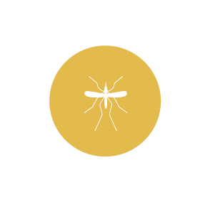

MUĞLA DELTA İLAÇLAMA
Yakarca (Tatarcık-Kum Sinekleri)
Muğla Delta İlaçlama

Ülkemizde özellikle Güneydoğu Anadolu, Ege, Akdeniz bölgelerinde yaygın olarak görülmektedir. Sivrisineklerden daha küçüktürler. 2-3 mm büyüklüğünde olup oldukça uzun bacaklara ve vücutlarının dış kısmında tüy benzeri yapılara sahiptirler. Erginleri gündüzleri, yüksek nem oranına sahip, loş veya karanlık alanlarda, rüzgardan fazla etkilenmeyen ağaç kovukları, ahır, gübre yığınları, mağaralar, duvar yarık ve çatlakları, elbise dolaplarında, tuvalet ve banyo köşelerinde saklanırlar. Geceleri aktif olurlar.
Sadece dişileri kan emer. Dişi tatarcık döllendikten ve kan emdikten 8-10 gün sonra 20-50 adet yumurtayı tek tek bırakır. Sivrisinekler gibi geceleri kan emer, gündüz dinlenirler. Kan emdikleri bölgede yakıcı, kaşındırıcı, ateşli ve alerjik deri enfeksiyonuna yol açabilir. Ülkemizde özellikle şark çıbanının (Leishmania) taşıyıcısıdırlar.
Bizimle iletişime geçin